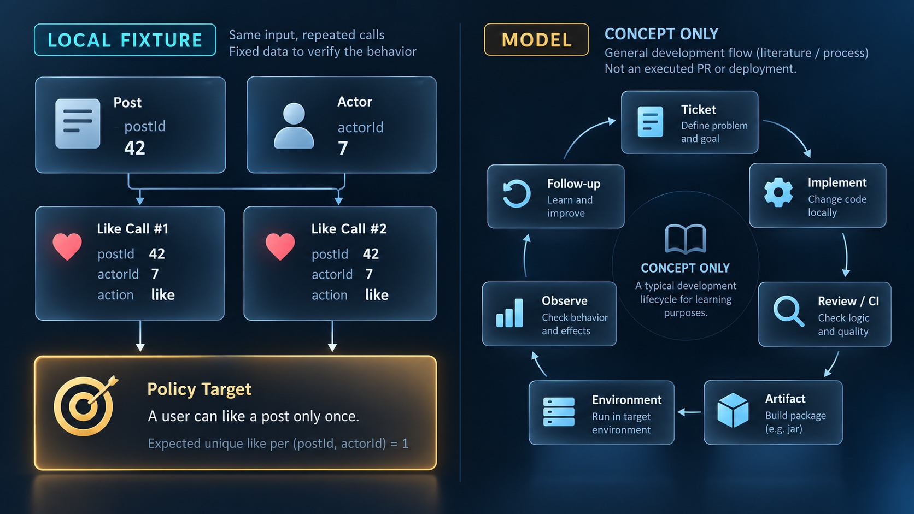

개발 생명주기 · 인수 조건·검증·같은 산출물
티켓의 완료 조건은 어떤 관찰로 연결할까요?
추가 임시 Git 저장소·plain Java21·Gradle9.8.0 CLI/JAR 실험입니다. 원문 Boot/Java25·JUnit·HTTP·DB·동시성·원격 CI/PR·registry·Docker·실제 배포는 실행하지 않았습니다. dev/stg/prod는 로컬 사본과 환경 문자열입니다.
원문 생명주기 지도 + 추가 CLI 인수 조건
추가 메모리 좋아요 표본입니다. API·DB·동시성 구현은 없고 원문 운영 흐름은 실제 실행하지 않았습니다.
두 호출에도 좋아요1
추가 CLI는 post42·actor7로 두 번 호출한 뒤 count==1을 검사합니다. 원문의 인수 조건을 작은 로컬 사례로 연결했습니다.

지금의 코드·검증 결과·로컬 파일 관찰값
함께 읽을 코드
원문·추가 CLI fixture·명시적 모델의 짧은 발췌입니다. 강조는 설명하는 위치이며 실시간 실행 줄이 아닙니다.
코드 강조는 설명 위치이며 실시간 실행 줄이 아닙니다. 실제 로컬 관측과 원문·모델을 구분해 읽습니다.
추가 실행 검증 로그 보기
최종 frozen 실제 JSON/PASS 발췌입니다. 실제 CHECK11개와 명시적 모델3개를 구분합니다. 모델 장면에는 PASS를 만들지 않습니다. 추가 CLI contract의 PASS는 JUnit이나 원격 CI 결과가 아닙니다.
원문·추가 실험 전체 코드와 실제 검증 근거
원문277줄·9개 fence를 보존했습니다. 추가 plain Java21.0.6/Gradle9.8.0 CLI를 새 임시 Git 저장소에서 실행했습니다. 실제 CHECK11개와 별도 Boolean·컬럼 이름 집합·장애 선택지 모델3개를 구분합니다. 원문의 Java25/Boot 앱·PR·원격 CI·registry·Docker·실제 배포와 DB migration은 실행하지 않았습니다.
동일 actor7/post42의 두 호출에서 실패 구현은2개, 수정 구현은1개였습니다. assemble0/JAR 생성과 check1은 함께 나타날 수 있습니다. 수정 build0/PASS1은 추가 CLI 계약이며 JUnit·HTTP·동시성 시험이 아닙니다. Git baseline 포인터와 사용자 저장소는 보존했고 새 저장소의 remote는0입니다. 상위 run0700 아래 repo는 Git 초기화 후 실측0755입니다.
실제2859바이트 JAR의 manifest Source-Revision과 SHA-256, dev/stg/prod 로컬 사본·설정 문자열·CLI flag·프로젝트 캐시 이동 뒤 동일 재빌드를 확인했습니다. 폴더 이름은 실제 환경 배포가 아니며 DB 별칭은 연결하지 않는 문자열입니다. 글로벌 Gradle 캐시는 삭제·이동하지 않았고 재사용·갱신될 수 있습니다. 재현성은 timestamp/순서를 고정한 이 fixture의 결과입니다. 성능·실제 장애·회복 시간은 측정하지 않았습니다.
원문·추가 실행의 범위
# D01 개발 생명주기 추가 실행
원문 277줄·9개 fence(Mermaid 3, Kotlin 1, bash 5)를 source.json의 SHA 및 original/ 사본과 대조했다. 들여쓴 bash도 원문 바이트를 유지한다. 원문의 Java25/Spring Boot 앱과 pull·push·PR·CI·registry·Docker·배포 명령은 실행하지 않았다.
추가 fixture는 plain Java21.0.6/Gradle9.8.0 CLI다. 매회 연구 폴더의 새 0700 run 아래 새 Git 저장소를 만들고, 빈 template·격리된 Git 설정·공개 demo identity·고정 시험 날짜를 사용한다. Git 초기화 후 repo 권한은 실측 0755이며 상위 run 0700으로 보호된다. 사용자 저장소는 원문/gradlew 읽기와 HEAD 보존 비교만 한다. 원격은 0개다. 전체 35개 명령은 새 fixture에서 실행한다.
B0(ad83bab69c2a4a2142fc73af56bbabc9206a913a)는 baseline, F1(065fee8e02b20313e961b1a68741932a5f49e40e)은 의도한 중복 구현, F2(318b31f2e3688e584a8f18c833ecec05c2f53e4f)는 HashSet을 쓰는 수정이다. 고정 시험 입력으로 재현되는 이 SHA는 사용자 커밋이 아니다. baseline 포인터는 B0를 유지하고 feat/post-like-demo는 2개 커밋 뒤 F2를 가리킨다.
추가 계약은 post42/actor7 좋아요를 두 번 호출해 1개를 기대한다. F1 assemble은 exit0/JAR 생성이지만 CLI는 2개, check는 exit1이다. 추가 local copy gate는 실패한 check와 review=true 입력에서 사본을 만들지 않았다. 실제 PR 승인이나 branch protection이 아니다. F2 build는 exit0/관찰1/CLI contract PASS1이다. 기본 test 작업은 NO-SOURCE이며 JUnit·HTTP·DB·동시성 검사가 아니다. HashSet은 순차 메모리 사례로 DB UNIQUE나 인증·동시성 보장을 증명하지 않는다.
실제 JAR는 2859바이트, SHA-256 6e52d10485e682154f7f1a02a2f898eccab91e89608afb047e3d828f06c4fda0이다. manifest의 Main-Class=example.lifecycle.LikeDemo, Implementation-Version=1.0-demo, Source-Revision=F2 전체 SHA를 실물과 대조했다. Git SHA-1과 JAR SHA-256은 서로 다른 대상을 식별한다. 이미지 digest·서명·registry attestation 검사는 아니다.
같은 검증된 JAR를 한 머신의 environment-copies/dev·stg·prod/app.jar에 복사하고 바이트/SHA가 같은지 확인했다. 실제 서비스 배포가 아니다. 각 CLI 실행의 env 표시는 dev/stg/prod, DB 별칭 문자열은 d01-demo-dev/stg/prod, 좋아요1이었다. DB 연결·Spring profile·실제 환경 구성 없이 출력 문자열만 다르며 Git 브랜치는 그대로다. 같은 JAR의 추가 CLI flag=false는 좋아요0, true는1이다. 공개 릴리스·HTTP 트래픽·feature flag provider를 실행한 결과가 아니다. 12-factor의 release(build+config)와 사용자에게 기능을 공개한다는 의미는 구분한다.
새 fixture 프로젝트의 .gradle만 자체 run으로 이동해 archive JAR가 남는지 확인한 뒤 clean build를 실행했다. 결과 exit0/동일 JAR SHA다. 이 fixture는 Jar timestamp를 끄고 항목 순서를 고정했다. 모든 빌드의 재현성이나 속도를 주장하지 않는다. 글로벌 Gradle/의존성 캐시는 삭제·이동하지 않았고 Gradle이 재사용·갱신할 수 있다. 마지막 private Git clean/원문 SHA/사용자 HEAD 보존을 검사했다.
11개 CHECK는 위 실제 추가 실행의 검사 단위다. 별도 3개 모델을 운영 실험으로 세지 않는다. review-and-check는 check AND review의 네 Boolean 행, schema-compatibility는 oldRequires={like_count}와 컬럼 이름 집합만 비교해 기존 true/이름 변경 false/기존 이름을 남긴 추가 true를 계산한다. DB migration·rollback은 없다. incident-options의 조건부 rollback·flag·hotfix·회복 관찰·후속 조치는 원문에 근거한 미실행 선택지다. 실제 장애·알림·SLA·복구시간·postmortem을 측정하지 않았다.
일반 재현: `python3 docs/design/d01-2026-10-20/source-proof/run-proof.py --runtime-root /Users/ds/research/javaexperience-d01-20261020/_data/runtime`. --freeze는 새 관측을 의도적으로 확정할 때만 쓰며 일반 재현에는 넣지 않는다. main 최종 fresh replay와 별도 임시 사본의 독립 재현이 11개 검사·3개 모델 전체 JSON에서 frozen과 일치했다. raw Gradle 로그는 실패 표본도 그대로 보존한다. Gradle 공식 current 문서는 조사 시 9.8.2였고 버전 고정 9.8.0 웹 문서는 접근 실패했다. 실제 wrapper 9.8.0 실행과 current 문헌 확인을 혼동하지 않는다.
원문 SHA·9개 fence
{
"source": "docs/knowledge/D01-dev-lifecycle-overview.md",
"sha256": "b0f93186f2b1dd9f88f534874e63a03c311fa7a0a1c5aaaf0486354510a6cf1f",
"lines": 277,
"originalBlocks": [
{
"block": 1,
"language": "mermaid",
"file": "block-01.mmd",
"sha256": "79aa3153d19c6827c3c28af7d41dee8ebdb6c9c5883fad1422f45c7148025062"
},
{
"block": 2,
"language": "mermaid",
"file": "block-02.mmd",
"sha256": "3cdf8d9f7650c12b974210371c499d0bfe5b9342d334b5b594744d9e609fb111"
},
{
"block": 3,
"language": "mermaid",
"file": "block-03.mmd",
"sha256": "ce49391de1e26703c07502731ce06660f910382a3bc4bad2e54e3bb8f50a8f09"
},
{
"block": 4,
"language": "kotlin",
"file": "block-04.kts",
"sha256": "81b8beb75010b137720003ad767defb23506116f24a6e5dbfe6b582071c7873a"
},
{
"block": 5,
"language": "bash",
"file": "block-05.sh",
"sha256": "9b541fdbec9f29939715c44273b02e9e345303dd1b7f3b0cf70de0459a9a166b"
},
{
"block": 6,
"language": "bash",
"file": "block-06.sh",
"sha256": "72fde2ee2b8d34ca115354ea58064869349ef2230dba30971f6a5f83297c68e0"
},
{
"block": 7,
"language": "bash",
"file": "block-07.sh",
"sha256": "c5819b073b4b8ec56a25192e692c4ff948c339c70f608bac922585e29a9cf1b3"
},
{
"block": 8,
"language": "bash",
"file": "block-08.sh",
"sha256": "05099db505641c16ddc872f9c78beb84d42a886a939ca86f4d627bfc03acd778"
},
{
"block": 9,
"language": "bash",
"file": "block-09.sh",
"sha256": "efdf6ab095d687f58494a4d6d5455e4c26c993eae3848d54f3201dfca5063800"
}
],
"status": "original277lines9fences preserved; extra privateGit/Gradle9.8.0/JDK21 CLI/JAR11checks+3explicitmodels mainfreeze/freshreplay wholematch; originalBoot25/remotes/PR/CI/deployment notrun"
}실제 CHECK11·별도 모델3
{
"checks": [
"local-assemble-is-not-contract-pass",
"local-cli-flag-changes-output-same-jar",
"local-config-output-does-not-change-git-branch",
"local-copies-keep-one-artifact-byte-identity",
"local-failed-check-blocks-added-copy-gate",
"local-fixed-contract-and-build-pass",
"local-jar-manifest-ties-source-revision",
"local-project-cache-is-not-archived-artifact",
"local-reproducible-fixture-rebuild",
"private-fixture-finished-clean",
"private-git-branch-pointer-isolated"
],
"facts": {
"local-assemble-is-not-contract-pass": {
"assembleExit": 0,
"jarExists": true,
"checkExit": 1,
"badCliLikeCount": 2,
"scope": "additional plain Java CLI/local Gradle; not GitHub CI or source Boot25 app"
},
"local-failed-check-blocks-added-copy-gate": {
"checkPassed": false,
"reviewInput": true,
"fileCopied": false,
"scope": "explicit extra local policy; not actual PR approval or branch protection"
},
"local-fixed-contract-and-build-pass": {
"buildExit": 0,
"observedLikes": 1,
"contractPassLines": 1,
"scope": "one added CLI contract, not JUnit/HTTP/database/concurrency coverage"
},
"private-git-branch-pointer-isolated": {
"baseline": "ad83bab69c2a4a2142fc73af56bbabc9206a913a",
"badCommit": "065fee8e02b20313e961b1a68741932a5f49e40e",
"fixedCommit": "318b31f2e3688e584a8f18c833ecec05c2f53e4f",
"featureCommitsAfterBaseline": 2,
"baselinePointerUnchanged": true,
"remotes": 0,
"scope": "new private Git repository; fixed demo author dates; no user branch or remote commands"
},
"local-jar-manifest-ties-source-revision": {
"manifest": {
"Manifest-Version": "1.0",
"Main-Class": "example.lifecycle.LikeDemo",
"Implementation-Version": "1.0-demo",
"Source-Revision": "318b31f2e3688e584a8f18c833ecec05c2f53e4f"
},
"sha256": "6e52d10485e682154f7f1a02a2f898eccab91e89608afb047e3d828f06c4fda0",
"bytes": 2859,
"zipEntries": [
"META-INF/",
"META-INF/MANIFEST.MF",
"example/",
"example/lifecycle/",
"example/lifecycle/LikeDemo.class",
"example/lifecycle/LikeLedger.class"
],
"scope": "actual JAR metadata/checksum; not container image digest/registry/attestation"
},
"local-copies-keep-one-artifact-byte-identity": {
"copySha256": {
"dev": "6e52d10485e682154f7f1a02a2f898eccab91e89608afb047e3d828f06c4fda0",
"stg": "6e52d10485e682154f7f1a02a2f898eccab91e89608afb047e3d828f06c4fda0",
"prod": "6e52d10485e682154f7f1a02a2f898eccab91e89608afb047e3d828f06c4fda0"
},
"allSameValidatedJar": true,
"scope": "local files named dev/stg/prod only; no service deployment or registry"
},
"local-config-output-does-not-change-git-branch": {
"cliOutputs": {
"dev": {
"mode": "ADDITIONAL_CLI_FIXTURE",
"java_version": "21.0.6",
"profile": "dev",
"db_alias_string_only": "d01-demo-dev",
"feature_enabled": "true",
"like_count": "1"
},
"stg": {
"mode": "ADDITIONAL_CLI_FIXTURE",
"java_version": "21.0.6",
"profile": "stg",
"db_alias_string_only": "d01-demo-stg",
"feature_enabled": "true",
"like_count": "1"
},
"prod": {
"mode": "ADDITIONAL_CLI_FIXTURE",
"java_version": "21.0.6",
"profile": "prod",
"db_alias_string_only": "d01-demo-prod",
"feature_enabled": "true",
"like_count": "1"
}
},
"branchStayed": "feat/post-like-demo",
"scope": "environment strings/CLI output only; no DB connection or real environment provisioning"
},
"local-cli-flag-changes-output-same-jar": {
"offLikeCount": 0,
"onLikeCount": 1,
"sameJarSha256": "6e52d10485e682154f7f1a02a2f898eccab91e89608afb047e3d828f06c4fda0",
"scope": "extra CLI flag branch, not actual deployment/release/HTTP or flag provider"
},
"local-project-cache-is-not-archived-artifact": {
"projectCacheMoved": true,
"archiveStillExists": true,
"archiveSha256": "6e52d10485e682154f7f1a02a2f898eccab91e89608afb047e3d828f06c4fda0",
"scope": "only new fixture project .gradle moved; global Gradle/dependency caches not removed or moved; Gradle may reuse/update its own caches"
},
"local-reproducible-fixture-rebuild": {
"rebuildExit": 0,
"rebuiltJarSha256": "6e52d10485e682154f7f1a02a2f898eccab91e89608afb047e3d828f06c4fda0",
"sameAsArchive": true,
"scope": "this fixed-input Jar task disables timestamps/sorts entries; not all builds reproducible"
},
"private-fixture-finished-clean": {
"privateGitClean": true,
"sourceUnchanged": true,
"userWorktreeHeadUnchanged": true,
"scope": "no user Git add/commit/pull/push/merge/PR/deployment performed"
}
},
"models": {
"review-and-check": {
"kind": "added boolean model",
"rows": [
{
"check": false,
"review": false,
"mayCopy": false
},
{
"check": false,
"review": true,
"mayCopy": false
},
{
"check": true,
"review": false,
"mayCopy": false
},
{
"check": true,
"review": true,
"mayCopy": true
}
],
"scope": "model inputs only; not actual GitHub review/required checks/protection"
},
"schema-compatibility": {
"kind": "added set comparison model",
"oldRequires": [
"like_count"
],
"beforeColumns": [
"like_count"
],
"afterRenameColumns": [
"like_total"
],
"beforeCompatible": true,
"afterRenameCompatible": false,
"afterAddCompatible": true,
"scope": "no actual DB/migration/rollback or production incident executed"
},
"incident-options": {
"kind": "source-derived decision examples; unexecuted",
"branches": [
"previous version safe and compatible: consider rollback",
"feature can be isolated: consider disabling flag",
"minimal correction safer: consider hotfix with verification"
],
"after": "observe recovery and create owned follow-up action",
"scope": "no actual alert/incident/SLA/hotfix/rollout/postmortem"
}
}
}재현 runner 전체
"""추가 temp Git/Gradle/JAR 실험이다. 학습자 코드·기존 Git 참조·원격·서비스는 바꾸지 않고 근거 파일만 기록한다."""
from pathlib import Path
import argparse,hashlib,json,os,shutil,stat,subprocess,tempfile,zipfile
OUT=Path(__file__).resolve().parent
ROOT=OUT.parents[3]
p=argparse.ArgumentParser()
p.add_argument('--runtime-root',required=True)
p.add_argument('--freeze',action='store_true')
a=p.parse_args()
runtime=Path(a.runtime_root).resolve();runtime.mkdir(parents=True,exist_ok=True)
run=Path(tempfile.mkdtemp(prefix='run-',dir=runtime));os.chmod(run,0o700)
repo=run/'repo';repo.mkdir(mode=0o700)
templates=run/'empty-git-template';templates.mkdir()
raw=run/'logs';raw.mkdir()
env=os.environ.copy()
for key in list(env):
if key.startswith('GIT_'):env.pop(key)
env.update(GIT_CONFIG_NOSYSTEM='1',GIT_CONFIG_GLOBAL='/dev/null',
GIT_AUTHOR_DATE='2026-10-20T00:00:00Z',GIT_COMMITTER_DATE='2026-10-20T00:00:00Z',
JAVA_HOME='/Users/ds/Library/Java/JavaVirtualMachines/corretto-21.0.6/Contents/Home',
TZ='UTC',LC_ALL='C')
checks=[];facts={};commands=[]
def sha(path):return hashlib.sha256(Path(path).read_bytes()).hexdigest()
def execute(args,label,cwd=repo,allowed=(0,),extra=None):
child_env=env.copy();child_env.update(extra or {})
result=subprocess.run(args,cwd=cwd,env=child_env,capture_output=True,text=True,timeout=120)
output=result.stdout+result.stderr
(raw/(label+'.log')).write_text(output)
commands.append({'step':label,'arguments':args,'exitCode':result.returncode})
if result.returncode not in allowed:raise AssertionError(label+' failed; inspect private raw log')
return result,output
def git(*args):
result,_=execute(['git','-C',str(repo),*args],f'git-{len(commands):02d}')
return result.stdout.strip()
def gradle(task,label,revision,allowed=(0,)):
args=[str(ROOT/'gradlew'),'-p',str(repo),'--offline','--no-daemon','--console=plain',
'-PsourceRevision='+revision,*task]
result,output=execute(args,label,allowed=allowed)
(OUT/(label+'.log')).write_text(output)
return result,output
def java(jar,label,extra=None):
_,output=execute([str(Path(env['JAVA_HOME'])/'bin/java'),'-jar',str(jar)],label,
cwd=run,extra=extra)
return dict(line.split('=',1)for line in output.splitlines()if '=' in line)
def check(id,ok,value):
if not ok:raise AssertionError(id)
checks.append(id);facts[id]=json.loads(json.dumps(value))
print('PASS '+id,flush=True)
def gate(check_passed,reviewed):return check_passed and reviewed
meta=json.loads((OUT/'source.json').read_text())
assert sha(ROOT/meta['source'])==meta['sha256']
for block in meta['originalBlocks']:
assert sha(OUT/'original'/block['file'])==block['sha256']
fixture=OUT/'fixture';fixture_manifest=[]
for file in sorted(fixture.rglob('*')):
if file.is_file():fixture_manifest.append({'file':str(file.relative_to(OUT)),'sha256':sha(file)})
(OUT/'fixture-files.json').write_text(json.dumps(fixture_manifest,indent=2)+'\n')
root_head_before=subprocess.check_output(['git','-C',str(ROOT),'rev-parse','HEAD']).decode().strip()
assert repo.resolve().is_relative_to(run.resolve())and repo!=ROOT
assert stat.S_IMODE(run.stat().st_mode)==0o700 and stat.S_IMODE(repo.stat().st_mode)==0o700
try:
execute(['git','init','--initial-branch=baseline','--object-format=sha1',
'--template='+str(templates),str(repo)],'git-init',cwd=run)
for key,value in [('user.name','D01 Teaching Fixture'),('user.email','fixture@example.invalid'),
('commit.gpgsign','false'),('core.autocrlf','false'),('gc.auto','0')]:git('config',key,value)
assert Path(git('rev-parse','--show-toplevel')).resolve()==repo
(repo/'README.md').write_text('# Additional lifecycle fixture\nNo remote, HTTP, database or deployment.\n')
(repo/'.gitignore').write_text('.gradle/\nbuild/\n')
git('add','README.md','.gitignore');git('commit','-m','docs: initialize private teaching fixture')
baseline=git('rev-parse','HEAD')
git('switch','-c','feat/post-like-demo')
shutil.copytree(fixture/'common',repo,dirs_exist_ok=True)
ledger=repo/'src/main/java/example/lifecycle/LikeLedger.java'
shutil.copyfile(fixture/'variants/bad/LikeLedger.java',ledger)
git('add','build.gradle','settings.gradle','src/main/java')
git('commit','-m','feat: add intentionally failing duplicate-like fixture')
bad_revision=git('rev-parse','HEAD')
assemble,_=gradle(['assemble'],'bad-assemble',bad_revision)
jar=repo/'build/libs/d01-lifecycle-fixture-1.0-demo.jar'
assert jar.exists()
bad_archive=run/'artifacts/bad-assembled.jar';bad_archive.parent.mkdir()
shutil.copyfile(jar,bad_archive)
bad_result,bad_stdout=gradle(['check'],'bad-check',bad_revision,allowed=(1,))
bad_cli=java(bad_archive,'bad-jar-cli',{'D01_DEMO_FEATURE':'true'})
check('local-assemble-is-not-contract-pass',assemble.returncode==0 and bad_result.returncode==1
and jar.exists()and bad_cli['like_count']=='2'and 'observed_likes=2' in bad_stdout,
{'assembleExit':0,'jarExists':True,'checkExit':1,'badCliLikeCount':2,
'scope':'additional plain Java CLI/local Gradle; not GitHub CI or source Boot25 app'})
blocked=run/'not-promoted/app.jar'
if gate(bad_result.returncode==0,True):blocked.parent.mkdir();shutil.copyfile(bad_archive,blocked)
check('local-failed-check-blocks-added-copy-gate',not blocked.exists(),
{'checkPassed':False,'reviewInput':True,'fileCopied':False,
'scope':'explicit extra local policy; not actual PR approval or branch protection'})
shutil.copyfile(fixture/'variants/good/LikeLedger.java',ledger)
git('diff','--check');git('add','src/main/java/example/lifecycle/LikeLedger.java')
git('commit','-m','fix: count one like per actor and post in memory')
fixed_revision=git('rev-parse','HEAD')
fixed_result,fixed_stdout=gradle(['build'],'fixed-build',fixed_revision)
archived=run/'artifacts/validated-like.jar';shutil.copyfile(jar,archived)
artifact_sha=sha(archived)
check('local-fixed-contract-and-build-pass',fixed_result.returncode==0
and 'observed_likes=1' in fixed_stdout and fixed_stdout.count('PASS duplicate-like-is-one')==1,
{'buildExit':0,'observedLikes':1,'contractPassLines':1,
'scope':'one added CLI contract, not JUnit/HTTP/database/concurrency coverage'})
check('private-git-branch-pointer-isolated',git('rev-parse','baseline')==baseline
and git('rev-parse','feat/post-like-demo')==fixed_revision
and git('rev-list','--count','baseline..feat/post-like-demo')=='2'and git('remote','-v')=='',
{'baseline':baseline,'badCommit':bad_revision,'fixedCommit':fixed_revision,
'featureCommitsAfterBaseline':2,'baselinePointerUnchanged':True,'remotes':0,
'scope':'new private Git repository; fixed demo author dates; no user branch or remote commands'})
with zipfile.ZipFile(archived)as z:
entries=z.namelist();manifest=dict(line.split(': ',1)for line in z.read('META-INF/MANIFEST.MF').decode().splitlines()if ': ' in line)
check('local-jar-manifest-ties-source-revision',manifest.get('Source-Revision')==fixed_revision
and manifest.get('Main-Class')=='example.lifecycle.LikeDemo'
and manifest.get('Implementation-Version')=='1.0-demo',
{'manifest':manifest,'sha256':artifact_sha,'bytes':archived.stat().st_size,'zipEntries':entries,
'scope':'actual JAR metadata/checksum; not container image digest/registry/attestation'})
profiles={};hashes={}
assert gate(True,True)
for profile in ['dev','stg','prod']:
target=run/'environment-copies'/profile/'app.jar';target.parent.mkdir(parents=True)
shutil.copyfile(archived,target);hashes[profile]=sha(target)
profiles[profile]=java(target,'cli-'+profile,{'D01_DEMO_ENV':profile,
'D01_DEMO_DB_ALIAS':'d01-demo-'+profile,'D01_DEMO_FEATURE':'true'})
check('local-copies-keep-one-artifact-byte-identity',len(set(hashes.values()))==1
and next(iter(hashes.values()))==artifact_sha,
{'copySha256':hashes,'allSameValidatedJar':True,
'scope':'local files named dev/stg/prod only; no service deployment or registry'})
check('local-config-output-does-not-change-git-branch',all(v['profile']==k
and v['db_alias_string_only']=='d01-demo-'+k and v['like_count']=='1'
for k,v in profiles.items())and git('branch','--show-current')=='feat/post-like-demo'
and git('rev-parse','HEAD')==fixed_revision,
{'cliOutputs':profiles,'branchStayed':'feat/post-like-demo',
'scope':'environment strings/CLI output only; no DB connection or real environment provisioning'})
off=java(archived,'cli-feature-off',{'D01_DEMO_ENV':'prod','D01_DEMO_FEATURE':'false'})
on=java(archived,'cli-feature-on',{'D01_DEMO_ENV':'prod','D01_DEMO_FEATURE':'true'})
check('local-cli-flag-changes-output-same-jar',off['like_count']=='0'and on['like_count']=='1'
and off['feature_enabled']=='false'and on['feature_enabled']=='true'and sha(archived)==artifact_sha,
{'offLikeCount':0,'onLikeCount':1,'sameJarSha256':artifact_sha,
'scope':'extra CLI flag branch, not actual deployment/release/HTTP or flag provider'})
project_cache=repo/'.gradle';assert project_cache.is_dir()
shutil.move(project_cache,run/'saved-project-cache')
check('local-project-cache-is-not-archived-artifact',not project_cache.exists()
and archived.exists()and sha(archived)==artifact_sha,
{'projectCacheMoved':True,'archiveStillExists':True,'archiveSha256':artifact_sha,
'scope':'only new fixture project .gradle moved; global Gradle/dependency caches not removed or moved; Gradle may reuse/update its own caches'})
rebuild,rebuild_stdout=gradle(['clean','build'],'rebuild-without-project-cache',fixed_revision)
check('local-reproducible-fixture-rebuild',rebuild.returncode==0 and sha(jar)==artifact_sha,
{'rebuildExit':0,'rebuiltJarSha256':sha(jar),'sameAsArchive':True,
'scope':'this fixed-input Jar task disables timestamps/sorts entries; not all builds reproducible'})
check('private-fixture-finished-clean',git('status','--porcelain')==''
and sha(ROOT/meta['source'])==meta['sha256']
and subprocess.check_output(['git','-C',str(ROOT),'rev-parse','HEAD']).decode().strip()==root_head_before,
{'privateGitClean':True,'sourceUnchanged':True,'userWorktreeHeadUnchanged':True,
'scope':'no user Git add/commit/pull/push/merge/PR/deployment performed'})
models={
'review-and-check':{'kind':'added boolean model','rows':[
{'check':c,'review':r,'mayCopy':gate(c,r)}for c,r in [(False,False),(False,True),(True,False),(True,True)]],
'scope':'model inputs only; not actual GitHub review/required checks/protection'},
'schema-compatibility':{'kind':'added set comparison model','oldRequires':['like_count'],
'beforeColumns':['like_count'],'afterRenameColumns':['like_total'],
'beforeCompatible':{'like_count'}.issubset({'like_count'}),
'afterRenameCompatible':{'like_count'}.issubset({'like_total'}),
'afterAddCompatible':{'like_count'}.issubset({'like_count','like_total'}),
'scope':'no actual DB/migration/rollback or production incident executed'},
'incident-options':{'kind':'source-derived decision examples; unexecuted',
'branches':['previous version safe and compatible: consider rollback',
'feature can be isolated: consider disabling flag',
'minimal correction safer: consider hotfix with verification'],
'after':'observe recovery and create owned follow-up action',
'scope':'no actual alert/incident/SLA/hotfix/rollout/postmortem'}
}
result={'checks':sorted(checks),'facts':facts,'models':models}
(OUT/'execution.json').write_text(json.dumps(result,ensure_ascii=False,indent=2)+'\n')
frozen=OUT/'checkpoints/expected-execution.json'
if a.freeze:frozen.parent.mkdir(exist_ok=True);frozen.write_bytes((OUT/'execution.json').read_bytes())
else:assert json.loads(frozen.read_text())==result,'frozen differs; investigate before updating'
print(json.dumps({'checks':len(checks),'models':len(models),'runtime':str(run),'frozenMatch':not a.freeze},indent=2))
finally:
(run/'commands.json').write_text(json.dumps(commands,ensure_ascii=False,indent=2)+'\n')
(OUT/'runtime-last.json').write_text(json.dumps({'run':str(run),'repo':str(repo),
'scope':'private CLI subprocesses; no server/remote deployment','commandCount':len(commands)},indent=2)+'\n')
추가 Gradle 설정
plugins { id 'java' }
version = '1.0-demo'
java { toolchain { languageVersion = JavaLanguageVersion.of(21) } }
tasks.register('contractTest', JavaExec) {
dependsOn classes
classpath = sourceSets.main.runtimeClasspath
mainClass = 'example.lifecycle.LikeDemo'
args '--self-test'
}
tasks.named('check') { dependsOn 'contractTest' }
tasks.named('jar', Jar) {
preserveFileTimestamps = false
reproducibleFileOrder = true
manifest {
attributes('Main-Class': 'example.lifecycle.LikeDemo',
'Implementation-Version': project.version,
'Source-Revision': providers.gradleProperty('sourceRevision').getOrElse('demo-unset'))
}
}
추가 CLI와 계약
package example.lifecycle;
/** 원문에 구현이 없는 좋아요 정책을 관찰하는 추가 CLI fixture다. HTTP/DB가 아니다. */
public class LikeDemo {
public static void main(String[] args) {
if (args.length > 0 && args[0].equals("--self-test")) {
LikeLedger ledger = new LikeLedger();
ledger.like(42, 7);
ledger.like(42, 7);
System.out.println("observed_likes=" + ledger.count());
if (ledger.count() != 1) {
throw new AssertionError("same actor/post must count once");
}
System.out.println("PASS duplicate-like-is-one");
return;
}
String profile = System.getenv().getOrDefault("D01_DEMO_ENV", "local");
String dbAlias = System.getenv().getOrDefault("D01_DEMO_DB_ALIAS", "none");
boolean enabled = Boolean.parseBoolean(System.getenv().getOrDefault("D01_DEMO_FEATURE", "true"));
LikeLedger ledger = new LikeLedger();
if (enabled) {
ledger.like(42, 7);
ledger.like(42, 7);
}
System.out.println("mode=ADDITIONAL_CLI_FIXTURE");
System.out.println("java_version=" + System.getProperty("java.version"));
System.out.println("profile=" + profile);
System.out.println("db_alias_string_only=" + dbAlias);
System.out.println("feature_enabled=" + enabled);
System.out.println("like_count=" + ledger.count());
}
}
의도한 실패 구현
package example.lifecycle;
/** 의도적으로 중복 요청까지 더하는 추가 실패 표본이다. */
final class LikeLedger {
private int likes;
void like(long postId, long actorId) {
likes++;
}
int count() {
return likes;
}
}
수정된 순차 메모리 구현
package example.lifecycle;
import java.util.HashSet;
import java.util.Set;
/** 추가 메모리 정책이다. DB UNIQUE나 실제 서비스 동시성 구현이 아니다. */
final class LikeLedger {
private final Set<String> likes = new HashSet<>();
void like(long postId, long actorId) {
likes.add(postId + ":" + actorId);
}
int count() {
return likes.size();
}
}
독립 임시 사본 재현
{
"reviewer": "p09_review",
"proofCopy": "/var/folders/v7/q1cs_f5d0n7cccrbydpm88xr0000gn/T/d01-independent-proof-6r5sujpw/source-proof",
"runtime": "/Users/ds/research/javaexperience-d01-20261020/_data/reviewer-runtime/run-i48qkq3z",
"wholeFrozenMatch": true,
"checks": 11,
"models": 3,
"commands": 35,
"runMode": "0o700",
"repoMode": "0o755",
"findings": {
"critical": 0,
"important": 0,
"note": "repo is 0755 after git init; enclosing run is 0700"
},
"scope": "independent temp copy, no original source/user Git/UI mutations"
}공식 출처 메인 대조·접근 한계
{
"date": "2026-10-20",
"executor": "main official/authorpage open andactualnativecrosscheck",
"sources": [
{
"url": "https://git-scm.com/book/en/v2/Git-Branching-Branches-in-a-Nutshell",
"verified": "branch pointer and HEAD/worktree relation"
},
{
"url": "https://docs.github.com/en/get-started/using-github/github-flow",
"verified": "PR/review/configured checks/merge; not automatic productiondeploy"
},
{
"url": "https://docs.gradle.org/current/userguide/java_plugin.html",
"verified": "current9.8.2 Java plugin roles; nativewrapper9.8.0 distinct"
},
{
"url": "https://docs.github.com/en/actions/concepts/workflows-and-actions/workflow-artifacts",
"verified": "artifact/cache/provenance concepts notautomaticallyimplemented"
},
{
"url": "https://12factor.net/config",
"verified": "configuration separated fromcode; exampleenvnamesnotfixedtopology"
},
{
"url": "https://12factor.net/build-release-run",
"verified": "releasehere meansbuild+config, distinctfromfeaturepublicrelease"
},
{
"url": "https://martinfowler.com/articles/feature-toggles.html",
"verified": "PeteHodgson originalarticle hostedbyFowler; flag behavior/publicexposure separation"
},
{
"url": "https://sre.google/workbook/postmortem-culture/",
"verified": "main directbodyopen succeeds; Lunarecordworkbook snippetonly/notdirect differs"
},
{
"url": "https://docs.github.com/en/actions/concepts/workflows-and-actions/deployment-environments",
"verified": "configured protections/secret access; notallrepoautomatic"
},
{
"url": "https://martinfowler.com/articles/continuousIntegration.html",
"verified": "frequent integration +automatedbuild/test, notjustserver"
},
{
"url": "https://docs.docker.com/reference/cli/docker/image/pull/",
"verified": "digest reference concept only, Dockerunexecuted"
}
],
"failed": [
{
"url": "https://docs.gradle.org/9.8.0/userguide/java_plugin.html",
"result": "web tool inaccessible; no version-specific pageclaim; actualwrapperproperties/nativeexecution9.8.0"
}
],
"limits": [
"sourceJava25/Bootunrun",
"nativeplainJava21/CLIlocalcopies notremoteCI/deployment",
"models explicit noDB/incident executed",
"LunaWorkbook access table says snippetonly; main body verification supersedes that limit"
]
}실제 실패한 check의 raw 로그
To honour the JVM settings for this build a single-use Daemon process will be forked. For more on this, please refer to https://docs.gradle.org/9.8.0/userguide/gradle_daemon.html#sec:disabling_the_daemon in the Gradle documentation.
Daemon will be stopped at the end of the build
> Task :compileJava UP-TO-DATE
> Task :processResources NO-SOURCE
> Task :classes UP-TO-DATE
> Task :contractTest FAILED
observed_likes=2
2 actionable tasks: 1 executed, 1 up-to-date
Exception in thread "main" java.lang.AssertionError: same actor/post must count once
at example.lifecycle.LikeDemo.main(LikeDemo.java:12)
FAILURE: Build failed with an exception.
* What went wrong:
Execution failed for task ':contractTest' (registered in build file 'build.gradle').
> Process 'command '/Users/ds/Library/Java/JavaVirtualMachines/corretto-21.0.6/Contents/Home/bin/java'' finished with non-zero exit value 1
* Try:
> Run with --stacktrace option to get the stack trace.
> Run with --info or --debug option to get more log output.
> Run with --scan to get full insights from a Build Scan (powered by Develocity).
> Get more help at https://help.gradle.org.
BUILD FAILED in 2s
실제 수정 뒤 build의 raw 로그
To honour the JVM settings for this build a single-use Daemon process will be forked. For more on this, please refer to https://docs.gradle.org/9.8.0/userguide/gradle_daemon.html#sec:disabling_the_daemon in the Gradle documentation.
Daemon will be stopped at the end of the build
> Task :compileJava
> Task :processResources NO-SOURCE
> Task :classes
> Task :jar
> Task :assemble
> Task :contractTest
observed_likes=1
PASS duplicate-like-is-one
> Task :compileTestJava NO-SOURCE
> Task :processTestResources NO-SOURCE
> Task :testClasses UP-TO-DATE
> Task :test NO-SOURCE
> Task :check
> Task :build
BUILD SUCCESSFUL in 2s
3 actionable tasks: 3 executed
Consider enabling configuration cache to speed up this build: https://docs.gradle.org/9.8.0/userguide/configuration_cache_enabling.html
기존 전체 개발 생명주기 개념 지도 보기
Delivery & operations · D01
이 문서에서 볼 내용
개발 도구·배포·운영
D01. 코드가 운영 서버에 올라가기까지
D01. 코드가 운영 서버에 올라가기까지 — 개발 전 과정 한 장
원문 전체 · 코드·버전별 변화·실무 가이드·참고문헌
3줄 요약 — 기능은 티켓에서 시작해 로컬 구현, 브랜치·PR 리뷰, 자동 검증, 배포를 거쳐 운영 데이터와 만나며 완성된다. 빌드 결과물은 한 번 만들어 식별하고, 개발·스테이징·운영 환경의 차이는 설정과 권한으로 통제한다. 배포는 끝이 아니다. 지표·로그·알림으로 결과를 확인하고, 이상이 생기면 완화·복구한 뒤 배운 점을 다음 작업에 반영한다.
011. 큰 그림
flowchart LR
A["요구사항과 티켓"] --> B["로컬 설계와 구현"]
B --> C["커밋과 기능 브랜치"]
C --> D["PR과 코드 리뷰"]
D --> E["CI 빌드 테스트 분석"]
E -->|통과| F["아티팩트와 컨테이너 이미지"]
E -->|실패| B
F --> G["개발 환경 배포"]
G --> H["스테이징 검증"]
H --> I["운영 배포"]
I --> J["모니터링과 사용자 피드백"]
J -->|개선 티켓| A
J -->|장애| K["대응 핫픽스 또는 롤백"]
K --> L["회고와 후속 작업"]
L --> A
왼쪽에서 오른쪽으로 갈수록 변경이 사용자 환경에 가까워진다. 티켓은 작업 이유와 완료 조건, 커밋은 변경 이력, 브랜치는 분리된 작업 흐름이다. PR(Pull Request, GitLab의 MR)은 리뷰·자동 검증을 요청하고 CI(Continuous Integration)는 빌드와 검사를 수행한다. 검증한 결과물은 dev·stg를 거쳐 운영으로 승격된다.
운영 신호는 개선 티켓으로 이어진다. 장애는 영향 완화 후 롤백이나 핫픽스로 복구하고 재발 방지 작업을 남긴다. 리뷰와 CI는 서로 다른 검증 신호다.(GitHub Flow, PR 리뷰, Fowler CI 문서 참조)
local은 개발자 PC, dev는 통합 확인, stg는 운영 유사 검증, prod는 실제 사용자 환경인 경우가 많다. 이름·개수는 팀마다 다르다. 데이터·비밀값·접근 권한과 사용자 영향이 달라 환경을 나누며, 설정을 분리하고 운영 비밀값을 저장소에 넣지 않는다. 12-Factor도 개발·운영 차이를 줄이고 설정을 환경에서 분리하도록 권한다.(12-Factor 문서 참조)
이 문서는 D 트랙의 전체 생명주기 지도이며, 단계별 심화는 아래 문서 지도를 참조한다.
022. 용어 사전
| 용어 | 한 줄 정의 | 실무 예시 | 헷갈리는 것과 차이 |
|---|---|---|---|
| 요구사항 | 사용자가 필요로 하는 동작이나 제약 | “게시글 작성자는 좋아요 수를 볼 수 있다” | 해결책인 API 설계와 다르다. |
| 티켓(ticket) | 작업·결정·문제를 추적하는 이슈 단위 | Jira 이슈에 담당자와 완료 조건 기록 | 커밋은 코드 변경 이력, 티켓은 업무 맥락이다. |
| 인수 조건(acceptance criteria) | 완료로 받아들일 수 있는 관찰 가능한 조건 | 중복 요청에도 좋아요 수가 두 번 오르지 않음 | 구현 방법을 강제하는 상세 설계와 다르다. |
| 로컬(local) | 개발자 컴퓨터에서 실행하는 환경 | IDE에서 Boot 앱과 로컬 DB 실행 | dev 공유 서버와 다르며 데이터도 보통 별개다. |
| 커밋(commit) | 저장소에 기록한 변경 이력의 한 단위 | feat: add post like API |
파일 저장과 다르다. 아직 원격 저장소에 올린 것도 아니다. |
| 브랜치(branch) | 커밋이 이어지는 독립된 작업 흐름 | feat/post-like |
폴더 복사본이 아니다. Git이 가리키는 이동 가능한 이름이다. |
| PR / MR | 변경을 합치기 전 토론·검토·검증을 요청하는 화면 | GitHub PR, GitLab MR | 제품명 차이는 있지만 협업 목적은 유사하다. |
| 코드 리뷰(code review) | 동료가 변경의 정확성·위험·이해 가능성을 살피는 과정 | 승인, 변경 요청, 줄 단위 의견 | CI는 자동 검사다. 사람 리뷰를 대체하지 않는다. |
| 머지(merge) | 한 변경 흐름을 다른 브랜치에 통합 | 승인된 PR을 main에 합침 |
배포와 다르다. 머지해도 운영에 아직 안 나갈 수 있다. |
| CI | 변경을 자주 통합하고 자동 빌드·검증하는 실천과 자동화 | PR마다 빌드와 테스트 실행 | 파이프라인은 작업을 구현한 실행 절차다. |
| CD | 지속적 전달(배포 준비) 또는 지속적 배포(자동 운영 반영)를 뜻함 | 승인 후 배포 버튼, 또는 자동 배포 | 약어가 두 뜻으로 쓰이므로 팀에서 의미를 확인한다. |
| 파이프라인(pipeline) | 빌드·검사·배포 같은 작업의 순서와 조건 | GitHub Actions workflow | CI/CD라는 목표·실천을 구체화한 자동화 흐름이다. |
| 러너/에이전트(runner) | 파이프라인 명령을 실제 실행하는 작업 환경 | GitHub-hosted runner, 사내 runner | 앱을 운영하는 서버와 역할이 다르다. |
| 단위 테스트 | 작은 코드 단위를 제한된 범위에서 검증 | 좋아요 서비스의 정책 계산 확인 | DB·네트워크를 포함하는 통합 테스트보다 빠르고 좁다. |
| 통합 테스트 | 여러 구성요소의 연결을 함께 검증 | 실제 테스트 DB에 저장·조회 | 단위 테스트보다 경계가 넓고 준비가 더 필요하다. |
| 정적 분석 | 실행하지 않고 코드 규칙·잠재 결함을 검사 | 포맷터, 정적 분석기, 취약점 스캔 | 테스트는 입력을 실행해 기대 결과를 확인한다. |
| 빌드(build) | 소스와 의존성을 처리해 실행·배포 가능한 산출물을 만드는 과정 | Gradle이 Boot JAR 생성 | 컴파일만이 전부는 아니다. 리소스 처리나 검사도 포함 가능하다. |
| 아티팩트(artifact) | 파이프라인이나 빌드가 만든 파일 산출물 | JAR, 테스트 리포트, 로그 | 캐시는 재사용해 속도를 높이고, 아티팩트는 결과를 보관·전달한다. |
| 컨테이너 이미지(image) | 앱과 실행에 필요한 파일·메타데이터를 묶은 불변 이미지 | post-api:1.8.0 이미지 |
실행 중인 컨테이너와 다르다. 컨테이너는 이미지의 실행 인스턴스다. |
| 레지스트리(registry) | 컨테이너 이미지를 저장하고 배포 대상에 제공하는 곳 | GHCR, 사내 레지스트리 | JAR 아티팩트 저장소와 같은 곳일 수도, 별개일 수도 있다. |
| 배포(deploy) | 특정 환경에 버전을 설치·실행해 트래픽을 받을 준비를 함 | 새 이미지로 dev 앱 교체 | 릴리스와 혼용되지만, 배포는 기술적 반영·릴리스는 사용자 공개 의미가 강하다. |
| 릴리스(release) | 기능이나 버전을 사용자가 이용할 수 있게 공개 | 기능 플래그를 켜 신규 API 노출 | 코드는 배포됐어도 플래그가 꺼져 있으면 공개 전일 수 있다. |
| 승격(promotion) | 검증한 동일 버전을 다음 환경으로 옮김 | dev 이미지 digest를 stg와 prod에 사용 | 환경마다 다시 빌드하면 동일한 결과를 승격한다고 보기 어렵다. |
| 환경(environment) | 앱이 구동되는 설정·데이터·권한의 조합 | local, dev, stg, prod | 브랜치 이름이 아니다. 각 환경이 반드시 서버 하나인 것도 아니다. |
| 롤백(rollback) | 문제가 생긴 변경을 이전 정상 버전으로 되돌림 | 이전 이미지 digest 재배포 | 데이터 스키마 변경까지 자동으로 되돌린다는 뜻은 아니다. |
| 모니터링(monitoring) | 시스템 상태와 변화를 지속해서 관찰 | 요청량, 오류율, 지연 시간 추적 | 알림은 관찰 결과 중 조치가 필요한 조건을 전달한다. |
| 로그/메트릭/트레이스 | 이벤트 기록 / 숫자 시계열 / 요청의 서비스 간 경로 | 에러 로그, p95 지연, trace ID | 서로 보완한다. 하나만으로 모든 원인을 설명하기 어렵다. |
| 장애(incident) | 서비스 영향이 있어 조정·복구가 필요한 사건 | 좋아요 API 타임아웃 급증 | 일반 버그는 영향·긴급도에 따라 장애 대응 절차가 아닐 수 있다. |
| 핫픽스(hotfix) | 긴급 문제를 빠르게 고쳐 배포하는 변경 | 요청 폭증을 일으킨 쿼리 수정 | 롤백은 이전 버전으로 복구한다. 핫픽스는 새 변경이다. |
| 사후 분석(postmortem) | 장애 경과·영향·기여 요인·후속 조치를 기록 | 알림 누락을 개선 티켓으로 만듦 | 개인 탓을 찾는 문서가 아니라 시스템 개선 기록이다. |
| 회고(retrospective) | 기간이나 사건에서 배운 점을 팀 작업 방식에 반영 | 리뷰 대기 시간을 줄일 실험 결정 | 사후 분석보다 범위가 넓은 정기 팀 회고로 쓰이기도 한다. |
| 기능 플래그(feature flag) | 코드 배포와 기능 공개를 분리하는 스위치 | 운영 배포 후 일부 사용자에게만 좋아요 노출 | 권한·실험·점진 공개에 유용하지만 수명 관리가 필요하다. |
033. 단계별로 보기
예시는 “로그인 사용자의 좋아요는 한 번만 집계된다”는 게시글 좋아요 API 티켓이다. 시간은 SLA가 아닌 경험적 감각으로, 팀·승인 정책에 따라 달라진다.
| 단계 | 무엇이 일어나나 / 담당자와 도구 | 입력 → 산출물 | 실패하면 어떻게 보이나 / 시간 감각 |
|---|---|---|---|
| 요구사항·티켓 | 기획자·제품 담당자와 개발자가 사용자 문제, 범위, 우선순위를 맞춘다. Jira·Linear·GitHub Issues 등을 쓴다. | 문의·요청 → 티켓, 인수 조건, 담당자 | “좋아요 수 증가”의 중복 기준·권한 기준이 모호해 구현과 QA 해석이 갈린다. 요구 조율은 수시간~수일, 의사결정 대기까지 포함하면 더 길다. |
| 설계·로컬 개발 | 개발자가 API 계약, 데이터 영향, 기존 코드 경계를 확인하고 IDE에서 구현한다. 로컬 DB나 테스트 대역으로 빠르게 확인한다. | 티켓·기존 코드 → 코드, 설정, 단위/통합 검증 | 로컬에서는 되는데 DB 버전·시드 데이터 차이로 공유 환경에서 실패한다. 이해와 구현은 수시간~수일. |
| 커밋·브랜치 | 개발자가 작업을 작게 기록해 원격 저장소에 올린다. Git·터미널·IDE를 쓴다. | 작업 트리 → 의미 있는 commit, feat/post-like 브랜치 |
큰 커밋이나 뒤섞인 변경은 원인 추적·리뷰를 어렵게 한다. 몇 분~수십 분, 충돌 해결은 별도다. |
| PR·코드 리뷰 | 작성자가 목적·테스트 방법·위험을 적고, 동료가 정책과 구현을 확인한다. | 브랜치·티켓 → 검토 의견, 승인 또는 수정 요청 | 리뷰 대기, 설명 부족, 요구사항 누락이 보인다. 리뷰 자체는 수십 분일 수 있고 대기 포함 수시간~수일이다. |
| CI | PR 이벤트를 받은 러너가 깨끗한 환경에서 Gradle 빌드, 테스트, 정적 분석을 실행한다. | PR commit → 성공/실패 상태, 테스트·분석 결과 | 의존성 다운로드, 컴파일 오류, 실패 테스트, flaky test, 러너 장애가 단계별 로그에 나타난다. 보통 분~십여 분을 목표로 하지만 저장소마다 다르다. |
| 아티팩트·이미지 | 승인된 소스에서 JAR 또는 컨테이너 이미지를 만들고 저장소에 보관한다. 개발자는 태그와 digest를 기록한다. | 검증된 commit → JAR/이미지, 버전·digest, 빌드 기록 | 산출물이 없거나 태그만 있고 commit 연결이 안 되면 “무엇을 배포했나”를 증명하기 어렵다. 빌드는 분 단위가 흔하지만 규모에 따라 다르다. |
| dev·stg 배포 | 개발 환경에서 통합 동작을 확인하고, 스테이징에서 운영 유사 설정·마이그레이션·시나리오를 검증한다. 개발/QA/운영 담당자가 협업한다. | 동일 아티팩트 → 배포 기록, 테스트 결과, 승인 | 설정·권한·외부 의존성 차이, DB 마이그레이션 오류, 스모크 테스트 실패가 드러난다. 자동 배포는 수분, 사람 승인·검증은 수시간 이상 걸릴 수 있다. |
| prod 릴리스 | 변경 위험과 영향 시간대를 보고 배포하거나 기능 공개를 켠다. 배포 권한·승인자는 조직 정책을 따른다. | 스테이징 검증 버전 → 운영 버전, 배포 이력 | 오류율·지연 증가, 프로세스 시작 실패, 일부 인스턴스만 교체되는 상태가 생길 수 있다. 자동 반영은 수분; 승인 창 대기는 예측하기 어렵다. |
| 운영·장애·회고 | 운영 담당자와 개발자가 대시보드·로그·알림을 보고, 영향을 줄이고, 복구한 뒤 후속 조치를 정한다. | 운영 신호·문의 → 완화/롤백/핫픽스, 사후 분석·티켓 | 알림이 없거나 원인·영향 버전을 몰라 탐지와 복구가 늦어진다. 대응 시간은 장애 심각도에 따라 분~수시간 이상이다. |
브랜치는 기본 브랜치와 변경 작업을 분리해 검토 공간을 만든다. PR 리뷰는 의견·승인·변경 요청을 남기며, CI는 자주 통합하고 자동 빌드로 오류를 빨리 찾는 실천이다. CI 서버 설치만으로 잦은 통합과 빠른 피드백이 생기지는 않는다.(GitHub Flow, PR 리뷰, Fowler CI 문서 참조)
아티팩트는 JAR·이미지·테스트 결과처럼 보관하거나 job 간 전달할 실행 결과이고, 캐시는 의존성 재사용 등으로 다음 실행을 빠르게 한다. 산출물과 commit을 연결하고 동일 이미지 digest를 dev에서 stg·prod로 승격하면 재빌드 차이를 줄인다. registry는 GHCR·클라우드·사내 저장소 중 선택한다.(GitHub Actions 아티팩트·환경 문서 참조)
sequenceDiagram
participant Dev as "개발자"
participant Repo as "Git 저장소"
participant CI as "CI 러너"
participant Review as "리뷰어"
participant Reg as "아티팩트 저장소"
participant DevEnv as "개발 환경"
participant Stg as "스테이징"
participant Prod as "운영 환경"
Dev->>Repo: 좋아요 브랜치 push
Repo-->>Dev: PR 열기
Repo->>CI: commit 빌드와 검사 실행
CI-->>Repo: 통과 또는 실패 상태
Review->>Repo: 의견과 승인 또는 수정 요청
Repo-->>Dev: 리뷰 피드백 반영
Dev->>Repo: 수정 commit push
Repo->>CI: 변경분 재검증
CI-->>Repo: 검증 통과
Repo->>Reg: JAR 또는 이미지 보관
Reg->>DevEnv: 개발 버전 배포
DevEnv-->>Review: API 시나리오 확인
Review->>Stg: 같은 버전을 스테이징에 승격
Stg-->>Prod: 승인 뒤 운영에 승격
환경은 이름만 나누지 않고 데이터·설정·권한·검증 목적을 구분한다. GitHub Actions environment에는 승인·브랜치 제한·보호 규칙·비밀값 접근을 설정할 수 있으며 규칙 통과 후 job이 실행된다. 다른 CI/CD에도 유사한 수단이 있다.(GitHub Actions 환경·배포 통제 문서 참조)
운영에서 좋아요 요청의 DB 오류가 급증했다고 하자. 온콜 담당자는 알림을 받고 영향 범위를 확인한다. 최근 배포가 원인일 가능성이 높고 이전 버전 복구가 안전하다면 롤백한다.
다만 DB 스키마가 이미 바뀌었다면 앱 이미지만 되돌릴 수 있는지 먼저 확인해야 한다. 롤백 위험이 크거나 기능 일부만 문제라면 기능 플래그를 끄거나 핫픽스를 준비할 수 있다.
안정화 후에는 타임라인, 영향, 탐지 지연, 기술적·절차적 기여 요인, 후속 액션을 기록한다. 인물을 탓하는 대신 다음 장애를 덜 쉽게 만드는 개선을 정한다.
flowchart TD
A["운영 지표 또는 사용자 문의"] --> B["장애 여부와 영향 확인"]
B --> C["온콜이 담당자 호출"]
C --> D["영향 완화 결정"]
D -->|이전 버전 안전| E["롤백"]
D -->|기능만 차단 가능| F["기능 플래그 끄기"]
D -->|수정이 더 안전| G["핫픽스 PR과 긴급 CI"]
E --> H["회복 상태 확인"]
F --> H
G --> H
H --> I["영향 종료와 사후 분석"]
I --> J["재발 방지 티켓"]
J --> K["정상 개발 흐름으로 합류"]
심화 위치: 서버·네트워크 → D02, 요구에서 API 개발 → D03, 빌드 → D04, 디버깅 → D05, 배포 → D06, 인프라 선택 → D07, CI/CD 협업 → D08, 운영 관측 → D09, DB → D10, 보안 → D11, Linux → D12, Git → P13, 로컬 컨테이너 → P14, IDE → P15, 관측성 구현 → S16, 패키징·배포 → S19. 각 주제의 상세는 해당 문서를 참조한다.
044. 직접 해보기
전제는 Spring Boot 4.1.1 / Java 25 / Gradle 프로젝트다(공통 브리프 기준). 아래 Gradle 설정은 예시이며 미실행이다.
plugins {
java
id("org.springframework.boot") version "4.1.1"
}
java {
toolchain {
languageVersion = JavaLanguageVersion.of(25)
}
}저장소 상태와 도구 버전을 확인한다.
main에 미커밋 수정이 없어야 한다.java -version ./gradlew --version git status --short git switch main git pull --ff-only git switch -c feat/post-like좋아요 API와 테스트를 구현한다. 로컬 DB 주소는 local 설정에 두고, 운영 비밀번호·토큰은 커밋하지 않는다. 프로파일 이름과 DB 준비 절차는 프로젝트에 맞춘다.
SPRING_PROFILES_ACTIVE=local ./gradlew bootRun시작 로그와 API 응답을 확인하고, 실패하면 DB 연결·포트·프로파일을 점검한다.
변경과 빌드 결과를 확인한다. 로컬 성공이 원격 CI 성공을 뜻하지는 않는다.
git diff --check ./gradlew clean build find build/libs -maxdepth 1 -type f -name '*.jar' -print git status --shortJAR 이름은 프로젝트 설정에 따라 다르다.
java -jar build/libs/<생성된-파일명>.jar수정한 파일만 커밋하고, 원격 저장소를 쓰는 팀에서는 브랜치를 push해 PR을 연다. 설명에 티켓 링크, 바뀐 점, 확인 방법과 데이터·배포 위험을 적는다.
git add src/main src/test git commit -m "feat: add post like API" git push -u origin feat/post-like
원격 CI는 GitHub Actions workflow가 구성돼 있어야 실행된다. GitHub-hosted runner와 외부 registry 사용은 비용·보안 정책을 확인하는 선택 실습이다. 티켓·commit·검증·산출물을 연결해 설명하면 실습을 마친다.
055. 자주 하는 오해와 실수
- “로컬에서 실행되면 끝이다” → 환경 차이로 dev에서 실패한다. 로컬 DB 버전·시드 데이터·환경 변수·시간대가 서버와 다를 수 있다.
local·dev설정을 분리하되 차이는 의도적으로 관리하고, 공유 환경에서 통합 확인할 시나리오를 티켓에 적는다. - “PR 승인은 테스트 통과와 같다” → 사람 판단과 자동 검증은 다른 신호다. 승인은 읽은 코드에 대한 의견이고 테스트 상태는 실행한 검사 결과다. 둘 다 통과 조건으로 둘 수 있지만 한쪽만으로 다른 쪽을 추정하지 않는다.
- “CI를 도입했으니 지속적 통합 중이다” → 브랜치가 오래 고립되면 통합 문제는 늦게 드러난다. 자동 빌드만 있고 변경이 장기간 분기되면 병합 충돌·행동 차이가 커진다. 작은 변경을 자주 합치고 실패한 기본 브랜치 빌드를 빨리 복구한다.
- “배포와 릴리스는 같은 버튼이다” → 서버에는 올라갔어도 사용자에게 공개되지 않을 수 있다. 기능 플래그, 점진 배포, 승인 시점이 나뉠 수 있다. 대화에서 “배포 완료”가 프로세스 교체인지 기능 공개인지 확인한다.
- “환경마다 빌드하면 된다” → 같은 태그라도 내용이 달라질 수 있다. 빌드 시각이나 의존성 저장소 변경으로 산출물이 달라질 수 있다. 검증한 산출물의 commit·버전·digest를 기록하고 같은 산출물을 승격한다.
- “스테이징은 운영 서버 복사본이다” → 데이터·권한·트래픽까지 완전히 같지 않다. 운영 데이터를 복제하면 개인정보와 보안 위험이 있고 비용도 커진다. 운영 유사성이 필요한 특성만 선택하고 접근·데이터 익명화 정책을 적용한다.
- “롤백은 항상 안전하다” → 데이터 구조와 외부 부작용은 되돌리기 어렵다. 새 코드가 DB 컬럼을 삭제했거나 메시지를 이미 발행했다면 이전 앱만 재배포해도 복구되지 않을 수 있다. 호환 가능한 스키마 변경과 복구 절차를 배포 전에 검토한다.
- “장애 회고는 책임자를 찾는 자리다” → 개인 비난은 위험 신호를 숨긴다. 실수 하나로 설명하지 말고 알림, 절차, 권한, 테스트, 배포 설계의 기여를 본다. 측정 가능한 후속 액션에 담당자와 기한을 둔다.
066. 시각화 설계 메모
| 제안 | 목적 | 노드/요소 | 화살표/관계 | 단계별 애니메이션 순서 | 강조할 오해 |
|---|---|---|---|---|---|
| 1. 전체 수명주기 지도 | 이 문서의 중심 그림으로 단계와 되돌아가는 피드백을 한 화면에 보인다. 위 첫 flowchart와 연결한다. | 티켓, 로컬, 브랜치·PR, CI, 산출물, dev·stg·prod, 관측, 장애·회고 | 주 흐름은 정방향, CI 실패와 운영 개선은 앞 단계로 돌아간다. | 티켓 → PR → CI → 동일 산출물 환경 승격 → 운영 신호 → 개선 티켓 | 운영이 끝점이라는 오해, 환경이 브랜치와 같다는 오해 |
| 2. 좋아요 기능 시퀀스 | 역할 사이에 누가 무엇을 넘기는지 보여준다. 위 sequenceDiagram과 연결한다. |
개발자, Git 저장소, CI, 리뷰어, 레지스트리, 각 환경 | PR 이벤트가 CI를 시작하고 승인·통과 후 산출물이 환경 간 이동한다. | 브랜치 push → 실패/통과 피드백 → 리뷰 → 산출물 저장 → dev → stg → prod | 승인과 테스트가 같은 검사라는 오해, 환경마다 재빌드한다는 오해 |
| 3. 환경 비교 카드 | local·dev·stg·prod의 설정·데이터·목적 차이를 비교한다. | 사용자, 코드 버전, DB·외부 서비스, 비밀값, 접근 권한 | 같은 버전이 승격되고 설정·권한은 환경에 맞게 주입된다. | local 실행 → dev 통합 → stg 유사성 확인 → prod 제한 접근 강조 | 각 환경을 별도 코드베이스로 만든다는 오해, 운영 데이터 무단 복제 오해 |
| 4. 장애 대응 분기 | 롤백·기능 비활성화·핫픽스의 선택과 사후 분석을 설명한다. 위 장애 flowchart와 연결한다. | 알림, 온콜, 영향도, DB 호환성, 롤백, 플래그, 핫픽스, 회고 | 영향 확인 뒤 위험이 더 낮은 복구 경로를 고르고 안정화 여부로 이어진다. | 신호 감지 → 영향 확인 → 완화 선택 → 회복 검증 → 개선 티켓 | 롤백이 항상 가능하다는 오해, 회고가 비난이라는 오해 |
077. 자가점검 Q&A (면접 대비)Q1. 커밋, PR, 배포는 어떻게 다른가? · Q2. CI에서 테스트가 통과했는데도 운영 장애가 날 수 있는 이유는? · Q3. dev, stg, prod 환경을 왜 나누나? · Q4. 아티팩트와 캐시는 왜 구분하나?
01Q1. 커밋, PR, 배포는 어떻게 다른가?
커밋은 저장소가 추적하는 변경 이력 한 단위다. PR은 변경을 기본 브랜치에 통합하기 전에 맥락·리뷰·CI 결과를 모으는 협업 요청이다. 배포는 특정 환경에서 프로그램을 실행 가능한 새 버전으로 바꾸는 행위다. PR 머지는 배포와 별개일 수 있다.
- 꼬리질문: PR이 머지됐으면 운영에 나간 것인가?
- 답: 아니다. 자동 배포 정책이 없다면 아직 운영 반영 전일 수 있고, 자동 배포도 dev에만 연결됐을 수 있다. 배포 대상과 릴리스 조건을 확인해야 한다.
02Q2. CI에서 테스트가 통과했는데도 운영 장애가 날 수 있는 이유는?
CI는 설정된 검사와 그 실행 환경만 검증한다. 운영 데이터 규모, 권한, 네트워크, 트래픽, 외부 서비스 동작이 다르면 문제가 생길 수 있다. 그래서 환경 유사성, 단계적 배포, 운영 관측이 별도로 필요하다.
- 꼬리질문: 그럼 CI의 가치는 무엇인가?
- 답: 반복 가능한 오류를 개발 초기에 빠르게 발견하고, 검증 근거를 PR에 남긴다. 모든 운영 위험을 증명하는 인증서는 아니다.
03Q3. dev, stg, prod 환경을 왜 나누나?
개발 중인 변경의 통합 확인, 배포 전 운영 유사 검증, 실제 사용자 서비스라는 목적과 위험이 다르기 때문이다. 환경별로 데이터·외부 주소·권한을 분리해 실수의 범위를 줄인다. 환경 수와 승인 규칙은 팀 규모와 위험에 맞춰 정한다.
- 꼬리질문: 스테이징에서 괜찮으면 운영도 안전한가?
- 답: 보장은 없다. 데이터량·권한·트래픽·외부 연동 차이가 남을 수 있다. 운영에 작은 비율로 내보내거나 지표를 보며 점진 반영하는 방법이 있다.
04Q4. 아티팩트와 캐시는 왜 구분하나?
아티팩트는 빌드·검사 결과인 JAR, 이미지, 테스트 리포트 등을 보관·전달한다. 캐시는 의존성 다운로드처럼 다음 실행에서 다시 쓸 수 있는 파일을 저장해 시간을 줄인다. 캐시가 없어도 정상 재생성이 가능해야 하고, 배포할 버전은 캐시가 아니라 식별 가능한 산출물이어야 한다.
- 꼬리질문: dev에서 확인한 이미지를 prod에도 써야 하는가?
- 답: 가능하면 동일 이미지의 digest를 승격하면 환경별 재빌드로 내용이 바뀌는 위험을 줄인다. 환경 설정은 산출물 밖에서 주입한다.
05Q5. 리뷰 승인과 CI 성공이 각각 알려주는 것은?
승인은 사람이 변경 목적·설계·위험을 읽고 검토했다는 신호다. CI 성공은 자동화된 명령과 테스트가 해당 commit에서 통과했다는 신호다. 서로 다른 위험을 확인하므로 팀은 두 조건을 함께 요구할 수 있다.
- 꼬리질문: 리뷰가 늦으면 어떻게 개선할까?
- 답: PR을 작게 만들고 목적·테스트·위험을 적으며 리뷰어를 적절히 지정한다. 대기 시간과 재작업 원인을 관찰해 팀 규칙을 조정한다.
06Q6. 장애 때 롤백과 핫픽스 중 무엇을 고르나?
복구 목표는 먼저 사용자 영향을 줄이는 것이다. 이전 버전이 안전하고 DB·메시지 호환성이 있으면 롤백이 빠를 수 있다. 원인이 명확하고 이전 버전의 결함이나 데이터 변경 때문에 롤백이 더 위험하면 최소 핫픽스나 기능 플래그 비활성화가 나을 수 있다.
- 꼬리질문: 롤백 전에 꼭 확인할 것은?
- 답: 앱 버전 외에 DB 스키마 호환성, 이미 발생한 외부 부작용, 현재 배포 진행 상태를 확인한다. 복구 뒤 핵심 지표가 회복했는지도 확인한다.
07Q7. 사후 분석에서 개인 책임을 따지지 않는 이유는?
사람을 비난하면 다음 사람은 실수나 위험을 숨기기 쉽다. 대신 당시 이용 가능했던 정보, 절차, 테스트, 알림, 배포 가드레일을 살펴 반복 실패 가능성을 낮춘다. 후속 액션은 담당자와 확인 기준을 붙여 추적한다.
- 꼬리질문: 책임을 묻지 않으면 아무도 조치하지 않는 것 아닌가?
- 답: 비난을 피하되 조치 책임은 명확히 둔다. “누가 잘못했나” 대신 “어떤 통제를 언제까지 바꾸고 효과를 어떻게 확인하나”를 기록한다.
088. 참고문헌
- GitHub Flow — https://docs.github.com/en/get-started/using-github/github-flow — 브랜치에서 변경을 작업하고 기본 브랜치와 분리해 협업하는 흐름을 확인했다.
- Continuous Integration — https://martinfowler.com/articles/continuousIntegration.html — 자주 통합하고 자동 빌드로 오류를 빠르게 확인하는 CI의 의미와 실천을 확인했다.
- The Twelve-Factor App — https://12factor.net/ — 개발·운영 차이를 줄이고 환경별 설정을 분리하는 원칙을 확인했다.
- Pull request reviews — https://docs.github.com/en/pull-requests/reference/pull-request-reviews — PR 리뷰 결정 유형과 리뷰가 코드 병합 전 피드백을 제공하는 점을 확인했다.
- Workflow artifacts — https://docs.github.com/en/actions/concepts/workflows-and-actions/workflow-artifacts — workflow 아티팩트의 저장·공유 목적과 캐시의 차이를 확인했다.
- Deployment environments — https://docs.github.com/en/actions/concepts/workflows-and-actions/deployment-environments — 개발·스테이징·운영 대상을 지정하고 보호 규칙·승인·비밀값을 적용하는 개념을 확인했다.
- Deploying with GitHub Actions — https://docs.github.com/en/actions/how-tos/deploy/configure-and-manage-deployments/control-deployments — 이벤트 기반 배포와 환경 보호·동시 실행 통제의 문서 설명을 확인했다.